السلسلة 40
السيارة (صنف B) · 40 سؤال بالصوت. حاول تجاوب بوحدك، من بعد شوف الجواب.
السؤال 1
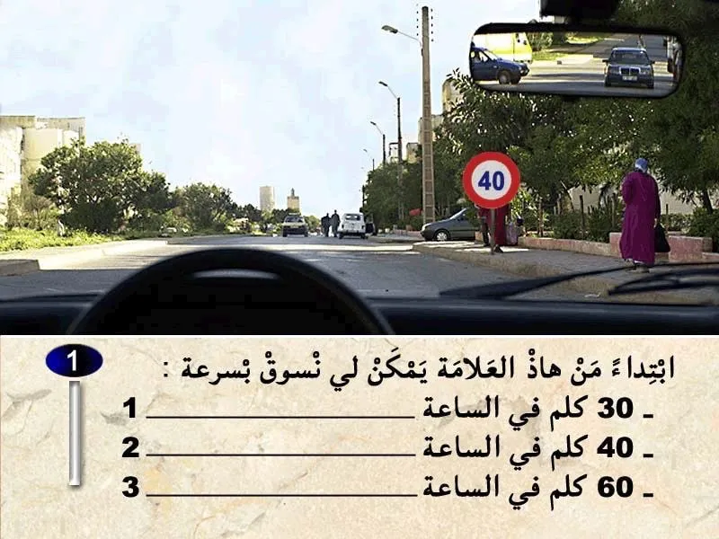
بيّن الجواب
الجواب الصحيح: 1 و 2
العلامة الطّرقية تعني تحديد السرعة في 40 كلم في الساعة، وهي تعني على أنه يمكنني السّير بأي سرعة أريد فقط لا أجاوز سرعة 40 كلم في الساعة. إذن في هذه الحالة يمكنني السّير بسرعة 30 كلم في الساعة ويمكنني أيضا السّير بسرعة 40 كلم في الساعة.
السؤال 2
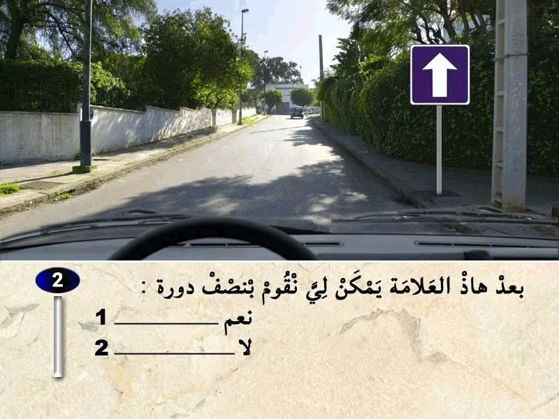
بيّن الجواب
الجواب الصحيح: 2
العلامة الطّّرقية تعني طريق ذات إتّجاه واحد، يعني أنه لا توجد سيّارات قادمة من الاتّجاه المعاكس، يعني لو قمت بعمل نصف دورة فسوف أتقابل مع عربات في الاتّجاه الذي كنت فيه سابقا وهذا ممنوع لأن الطّريق ذات إتّجاه واحد فقط. إذن في هذه الحالة و بعد هذه العلامة لا يمكنني القيام بنصف دورة.
السؤال 3
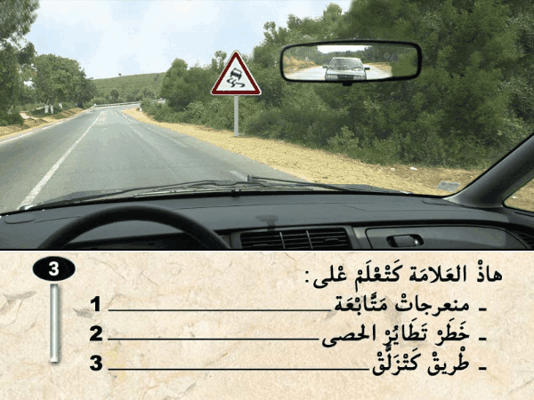
بيّن الجواب
الجواب الصحيح: 3
العلامة الطّرقية تعني انتباه خطر طريق زلقة.
السؤال 4
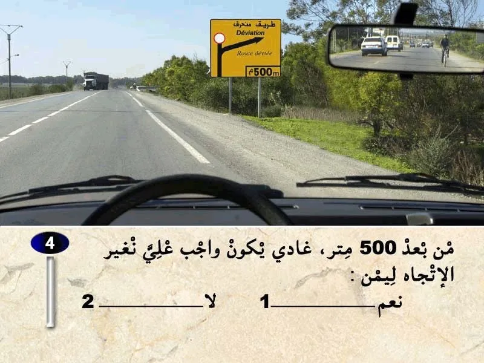
بيّن الجواب
الجواب الصحيح: 1
العلامة الطّرقية مكتوب بها على أن الطريق سوف يصبح منحرف على بعد 500 متر، العلامة الطّرقية الدائرية الخاصة بالمنع في المسلك على اليسار في العلامة الطّرقية فهي تعني على أن ذلك الطّريق لو قمت بسلكه والذّهاب مباشرة سوف يكون مسدود ولا يمكنني المرور فيه. يعني أنه واجب على جميع العربات أنها تأخد المسار المنحرف على اليمين لأن الطّريق مباشرة ممنوع فيها المرور بسبب الأشغال. إذن في هذه الحالة من بعد 500 متر سوف يكون من الواجب عليّ تغيير الاتّجاه
السؤال 5
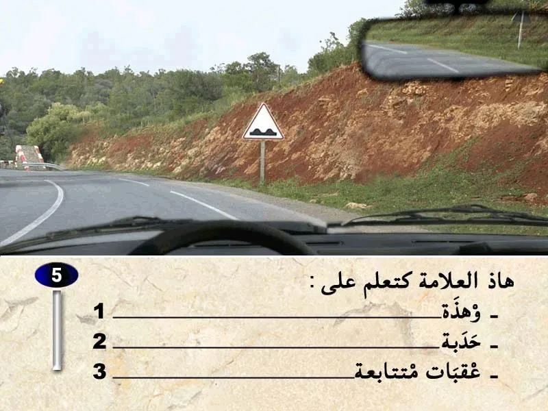
بيّن الجواب
الجواب الصحيح: 1 و 2
العلامة الطّرقية تعني انتباه خطر وْهذَة أو حَذَبة.
السؤال 6
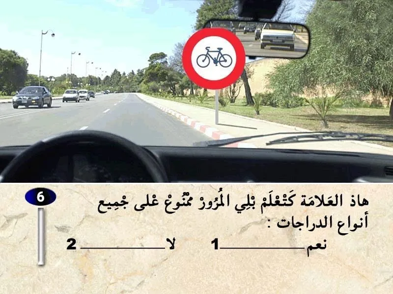
بيّن الجواب
الجواب الصحيح: 2
العلامة الطّرقية تعني ممنوع المرور على جميع أنواع الدّراجات (بما فيها الدّراجات العادية والدّراجات النارية).
السؤال 7
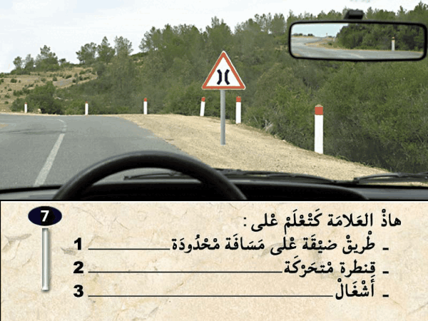
بيّن الجواب
الجواب الصحيح: 1
العلامة الطّرقية تعني انتباه خطر طريق ضيّقة على مسافة محدودة (علامة الأشغال والقنطرة المتحركة علاماتهما ليست مثل هذه العلامة بل لديهم علاماتهم الخاصة). إذن في هذه الحالة هذه العلامة تُعْلِمْ على طريق ضيّقة على مسافة محدودة.
السؤال 8
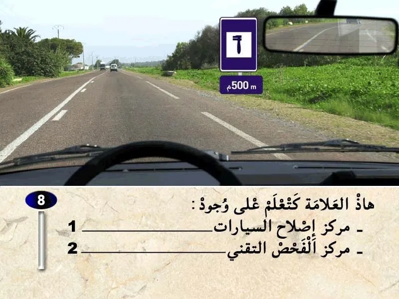
بيّن الجواب
الجواب الصحيح: 1
هذه العلامة الطّرقية التي تحتوي على هذا الرمز فهي تُعْلمْ على وجود مركز إصلاح السيارات.
السؤال 9
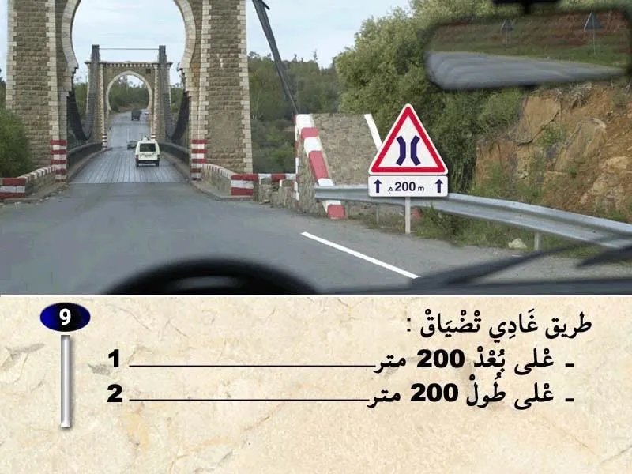
بيّن الجواب
الجواب الصحيح: 2
علامة انتباه خطر طريق ضيّقة تحتوي على علامة تكميلية أسفلها مكتوب فيها 200 متر مع أسهم للأعلى، تلك الأسهم تعني على مسافة أو على إمتداد أو تعني كذلك على طول ولا تعني على بعد. إذن في هذه الحالة الطريق سوف تصبح ضيّقة على طول 200 متر.
السؤال 10
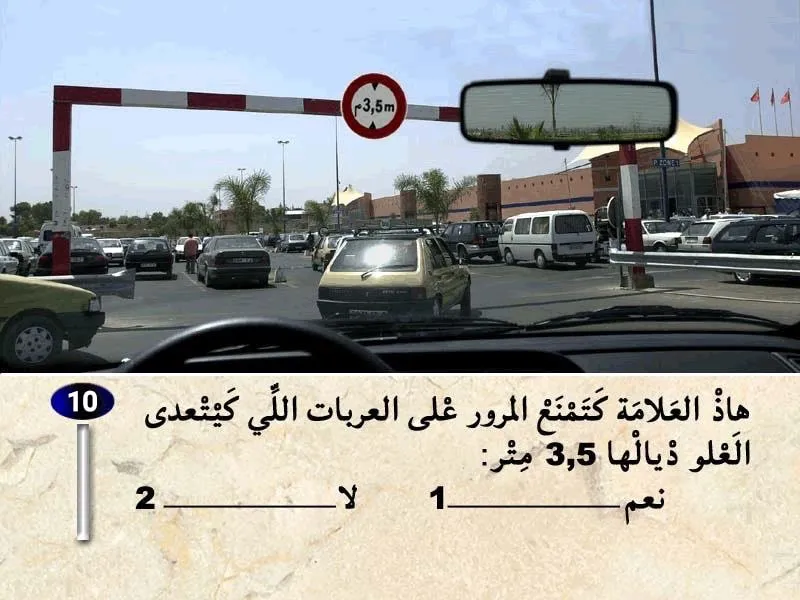
بيّن الجواب
الجواب الصحيح: 1
العلامة الطّرقية تمنع مرور العربات التي يتجاوز علوّها 3,5 متر (كما توضّح أسهل العلو في العلامة الطّرقية)، العربات التي علوّها 3,5 متر يمكنها المرور لكن التي علوّها أكثر من 3,5 متر لا يمكنها المرور مثلا علو 3,6 متر أو 4 متر لا يمكنها المرور.
السؤال 11
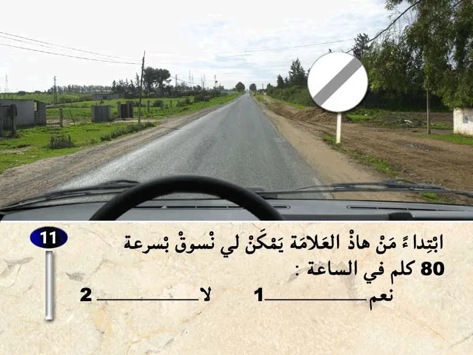
بيّن الجواب
الجواب الصحيح: 1
العلامة الطّرقية تعني انتهاء جميع أنواع المنع التي كانت سابقا (باستثناء علامات الوقوف والتوقّف لا تقوم بإلغائهم) بما أنني خارج التجمّع الحضري والسرعة محددة في 100 كلم في الساعة إذن يمكنني السّير بأي سرعة فقط لا أتجاوز سرعة 100 كلم في الساعة. إذن في هذه الحالة إبتداء من هذه العلامة يمكنني السّير بسرعة 80 كلم في الساعة.
السؤال 12
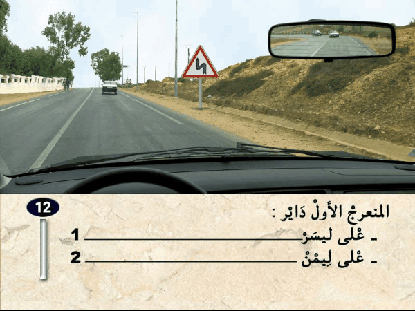
بيّن الجواب
الجواب الصحيح: 1
العلامة الطّرقية تعني انتباه خطر منعرجات، المنعرج الاول على اليسار و الثاني على اليمين. (لكي لا تتشتت(ي) في العلامة الخاصة ب المنعرجات المتتالية نلاحظ فقط في أي جهة ينعطف المسار، كما نلاحظ في العلامة الانعطاف الأول على اليسار إذن المنعرج الأول سوف يكون على اليسار).
السؤال 13
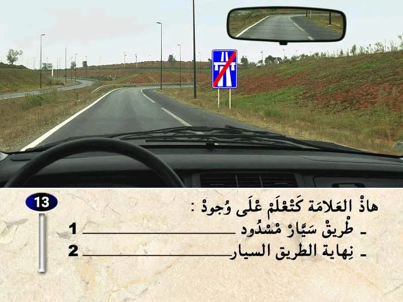
بيّن الجواب
الجواب الصحيح: 2
العلامة الطّرقية تحتوي على رمز الطّريق السيّار مع خط أحمر، الخط الأحمر يعني انتهاء الطّريق السيّار. إذن في هذه الحالة العلامة تُعْلِمْ على نهاية الطّريق السيّار.
السؤال 14
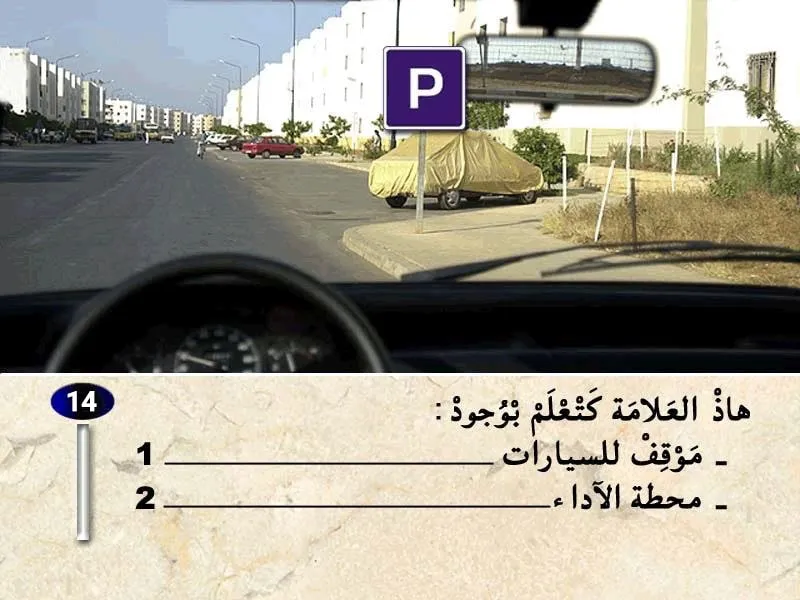
بيّن الجواب
الجواب الصحيح: 1
علامة الإرشاد P الظّاهرة في الصورة تعني موقف سيارات.
السؤال 15
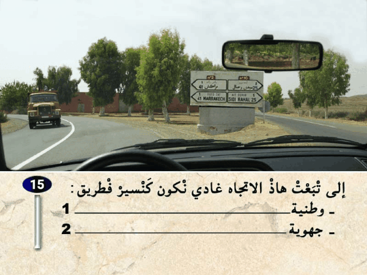
بيّن الجواب
الجواب الصحيح: 1
كما نلاحظ في الصورة فالإشارات الصغيرة فوق علامة الاتّجاه فهي باللون الأحمر واللون الأحمر يشير على أن الطّريق وطنية، لو كان اللون أخضر لقُلنا على أنها طريق جهوية. إذن في هذه الحالة إذا قمت بإتّباع هذا الاتّجاه فسوف أكون أسير في طريق وطنية.
السؤال 16
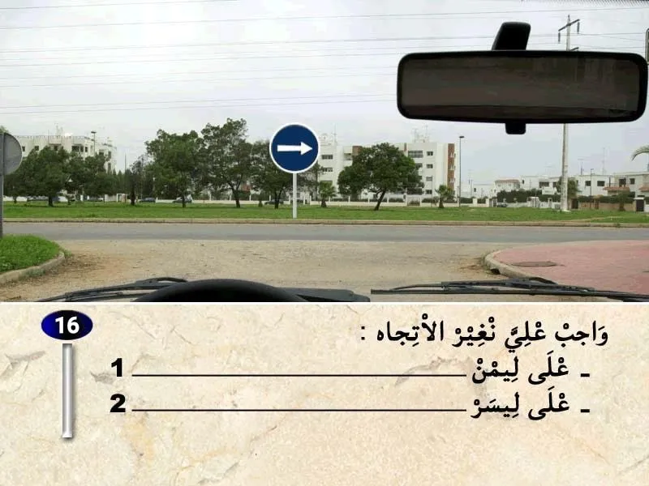
بيّن الجواب
الجواب الصحيح: 1
علامة الإجبار الظاهرة على الصورة تحتوي على سهم يتّجه إلى اليمين وهو يعني الإجبار للانعطاف على اليمين. إذن من الواجب عليّ تغيير الاتّجاه إلى اليمين.
السؤال 17
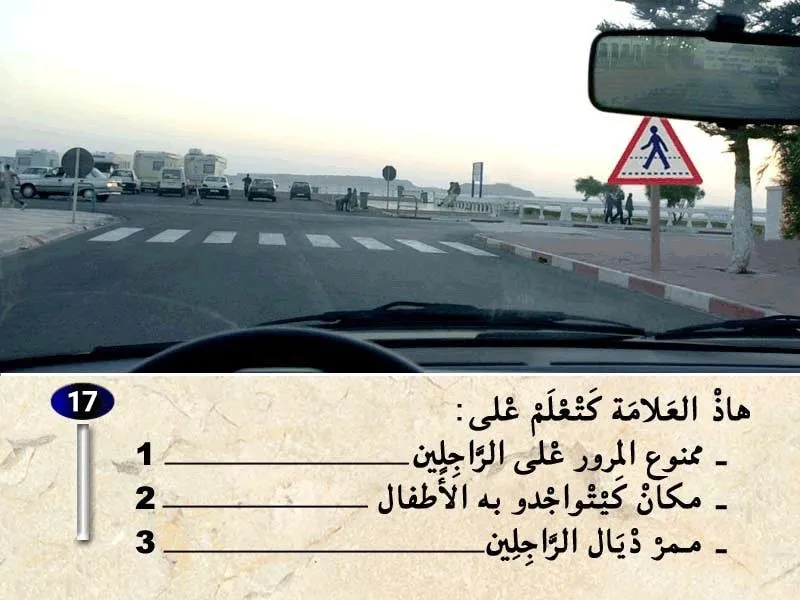
بيّن الجواب
الجواب الصحيح: 3
العلامة الطّرقية الظاهرة في الصورة تعني انتباه خطر ممر الرّاجلين (العلامة الطّرقية الخاصة بالمنع تكون دائرية وليس داخل مثلث وبالنسبة لمكان يتواجد فيه الأطفال فهنالك علامة طرقية اخرى لذلك) إذن في هذه الحالة هذه العلامة تُعْلِمْ على ممر للرّاجلين.
السؤال 18
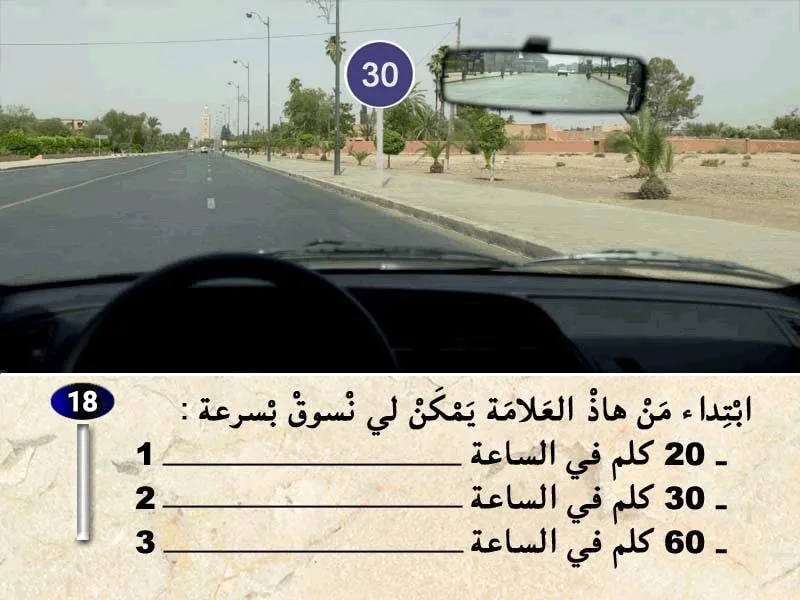
بيّن الجواب
الجواب الصحيح: 2 و 3
العلامة الطّرقية تعني السرعة الدنيا الإجبارية 30 كلم في الساعة وهي تعني أنه لا يمكنني السّير بسرعة أقل من 30 كلم في الساعة. بما أنني داخل المجال الحضري والسّرعة محددة في 60 كلم في الساعة إذن يمكنني السّير بسرعة 30 كلم في الساعة أو 40 كلم في الساعة او 50 كلم في الساعة أو 60 كلم في الساعة (فقط لا أسير بأقل من 30 كلم في الساعة ولا أسير بأكثر من 60 كلم في الساعة لأنني داخل المجال الحضري) إذن في هذه الحالة إبتداء من هذه العلامة يمكنني السّير بسرعة 30 كلم في الساعة و ب 60 كلم في الساعة.
السؤال 19
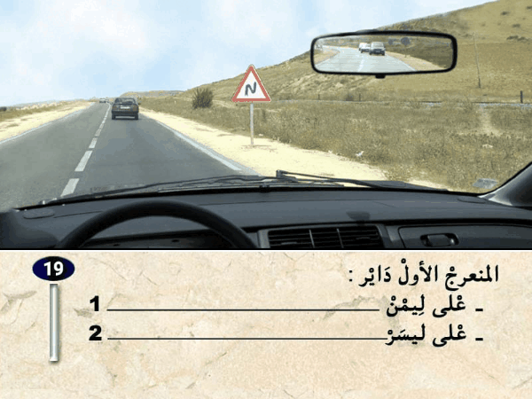
بيّن الجواب
الجواب الصحيح: 1
العلامة الطّرقية تعني انتباه خطر منعرجات، المنعرج الاول على اليمين و الثاني على اليسار. (لكي لا تتشتت(ي) في العلامة الخاصة ب المنعرجات المتتالية نلاحظ فقط في أي جهة ينعطف المسار، كما نلاحظ في العلامة الانعطاف الأول على اليمين إذن المنعرج الأول سوف يكون على اليمين).
السؤال 20
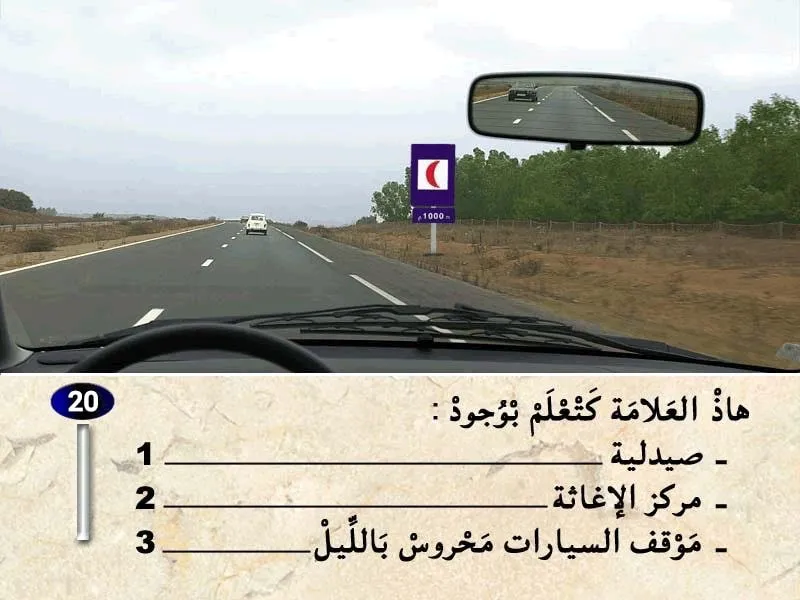
بيّن الجواب
الجواب الصحيح: 2
العلامة الطّرقية الخاصة بالإرشاد تعني أنه على بعد 1000 متر سوف نجد مركز للإغاثة.
السؤال 21
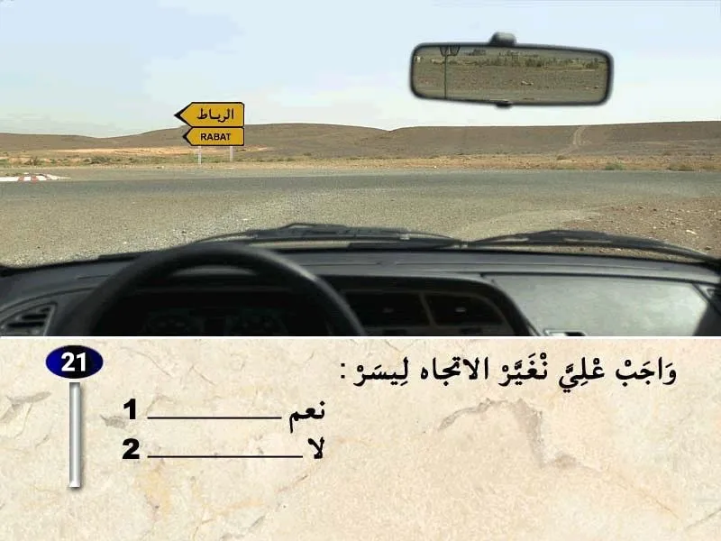
بيّن الجواب
الجواب الصحيح: 2
العلامة الطّرقية الصفراء فهي علامة مؤقّتة وهي تُعلموني على أن الطّريق تؤدي للرباط فهي على اليسار، العلامة فقط تُعلمني على أن طريق الرباط على اليسار ولا تجبرني للانعطاف على اليسار، ويمكنني الانعطاف على اليمين. إذن في هذه الحالة ليس من الواجب عليّ تغيير الاتّجاه على اليسار.
السؤال 22
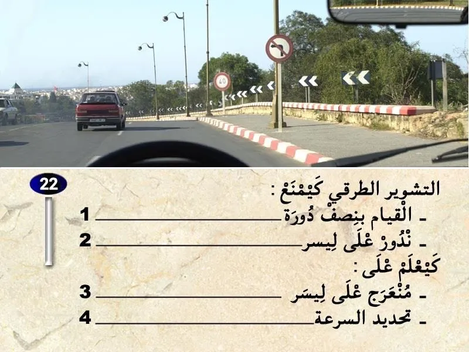
بيّن الجواب
الجواب الصحيح: 2 و 3 و 4
لا يوجد تشوير طرقي يُعلم على أنه ممنوع القيام بنصف دورة، يوجد تشوير طرقي عمودي ممنوع الانعطاف على اليسار، أيضا أقصى اليمين يوجد التّشوير الطّرقي الذي يشير إلى أن هنالك منعرج على اليسار و يوجد تشوير طرقي عمودي في الأمامي يشير إلى تحديد السّرعة في 40 كلم في الساعة. إذن التّشوير الطّرقي يمنع الانعطاف على اليسار ويُعْلِمْ التّشوير الطّرقي على منعرج على اليسار وكذلك تحديد السّرعة في 40 كلم في الساعة.
السؤال 23
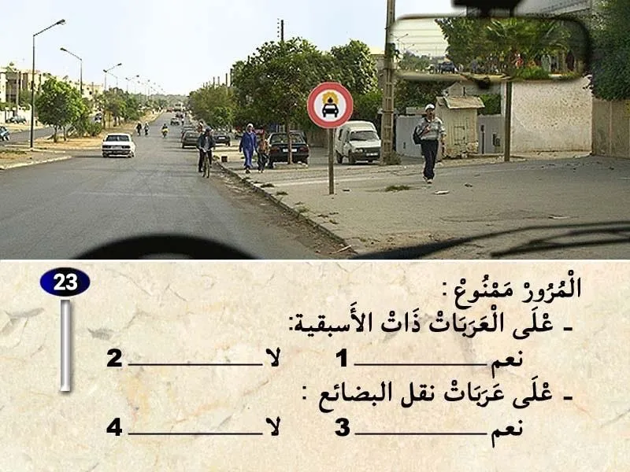
بيّن الجواب
الجواب الصحيح: 2 و 4
العلامة الطّرقية الظاهرة في الصورة فهي لا تعني ممنوع مرور العربات ذات الأسبقية ولا تعني كذلك ممنوع مرور عربات نقل البضائع، العلامة الطّرقية تعني ممنوع مرور العربات التي تحمل متفجّرات
السؤال 24
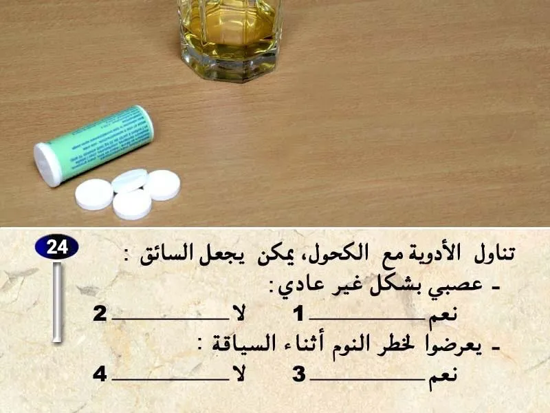
بيّن الجواب
الجواب الصحيح: 1 و 3
إن تناول الأدوية مع الكحول يزيد أكثر إرتباك السائق ويجعله أكثر عصبية بسبب الخلط بين الأدوية و الخمر سوياََ، كما أن تناولهم معاََ يزيد من خطر النوم وعدم الانتباه. (لذلك وجب الإبعاد عن شرب الخمر وتناول الأدوية قبل و أثناء السّياقة).
السؤال 25
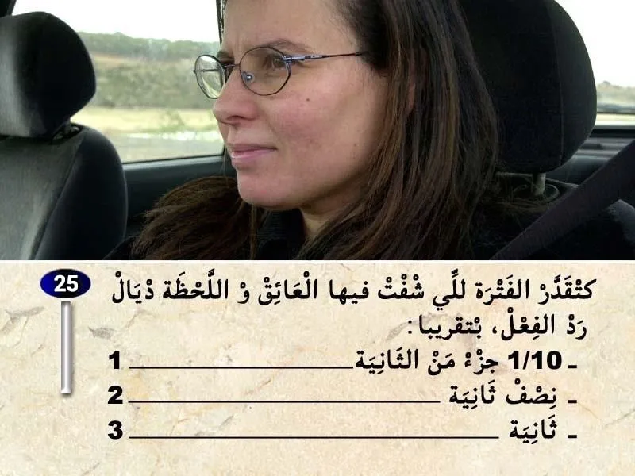
بيّن الجواب
الجواب الصحيح: 3
وقت رد الفعل : هي اللحظة منين كيشوف السائق الخطر ويبدا كيفية التعامل معه وتفاديه، ووقت رد الفعل يقدر بثانية ويتعلق دائما بالسائق ويتغير من سائق لاخر حسب العمر حالته البدنية والنفسية. في المتوسط وقت رد الفعل هو 1 ثانية.
السؤال 26
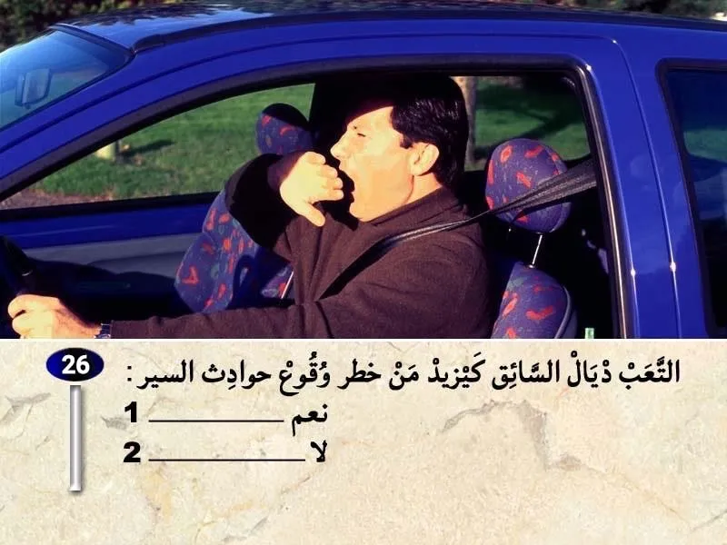
بيّن الجواب
الجواب الصحيح: 1
التعب والنوم أهم أسباب حوادث السير، الإرهاق والشعور بالنعاس من بين أبرز الأسباب التي تتسبب في حوادث سير مؤلمة تخطف أرواح الكثير من مستعملي الطرق، وعلى عكس الجوع والعطش فإن النوم لا يمكن كبته، وإذا حاولت مقاومته فسيعود مجددا ليواصل إزعاجه. لذلك التوقف عن السياقة والاستراحة بعد كل ساعتين مهم للغاية.
السؤال 27
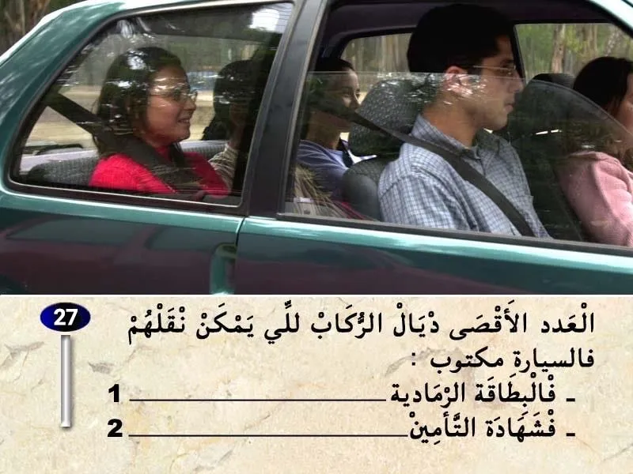
بيّن الجواب
الجواب الصحيح: 2
العدد الأقصى أو بتعبير أخر عدد المقاعد المسموح بها في السيّارة فتوجد في شهادة التأمين. لأن شركة التأمين هي التي تُرَخِّصْ عدد المقاعد المسموح بها في السيّارة أي في شهادة التأمين.
السؤال 28
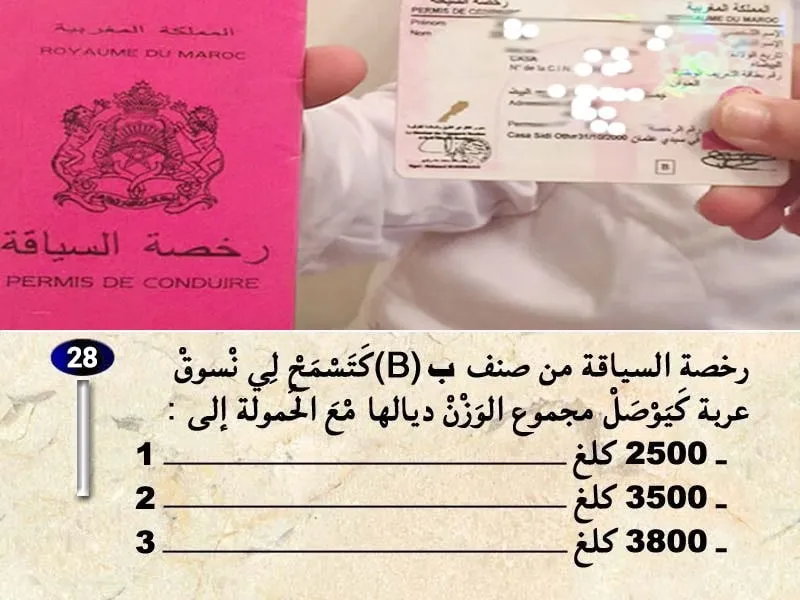
بيّن الجواب
الجواب الصحيح: 1 و 2
رخصة السّياقة من صنف ب (B) تسمح لي بسياقة عربة يصل مجموع حمولتها إلى 3500 كلغ كحد أقصى، يعني عندما يكون وزن العربة مع الحمولة يساوي أو يقل عن 3500 كلغ يمكنني سياقتها.
السؤال 29
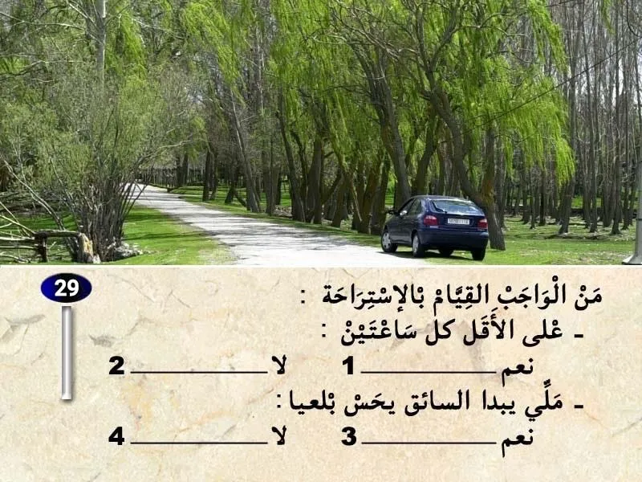
بيّن الجواب
الجواب الصحيح: 1 و 3
التوقف عن السياقة والاستراحة بعد كل ساعتين مهم للغاية لكي يستريح السائق، لأن السّياقة المتواصلة بدون راحة فإنّها تؤدي إلى النوم، وعلى عكس الجوع والعطش فإن النوم لا يمكن كبته، وإذا حاولت مقاومته فسيعود مجددا ليواصل إزعاجه. لذلك أخد إستراحة بعد كل ساعتين وتناول الطعام والشراب بشكل معتدل لاستعادة طاقتك ونشاطك فهو أمر مهم جدا للتّخلّص من التّعب.
السؤال 30
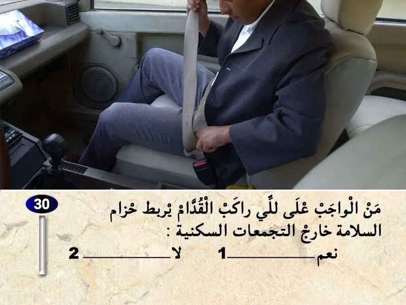
بيّن الجواب
الجواب الصحيح: 1
استعمال حزام السلامة من قبل السائق والرّكاب إجباري خارج التجمعات السّكنية.
السؤال 31
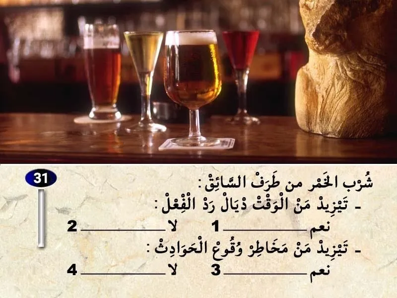
بيّن الجواب
الجواب الصحيح: 1 و 3
شرب الخمر هو من بين أحد الأسباب التي تؤدي إلى ضعف التّركيز وضعف التّركيز يؤدي إلى زيادة وقت رد الفعل، يعني السائق سوف يأخد وقت طويل عندما يريد أن يَتّخِدَ قرار على عكس سائق عادي لم يشرب الخمر فوقت رد الفعل عنده يكون عادي. وعندما يزيد وقت رد الفعل فهذا يؤدي إلى أرتفاع نسبة وقوع حوادث سير. مثال سائق شرب الخمر وفقد تركيزه في هذه الحالة لو كان يسير في الطّريق وأمامه عربة قامت بإستعمال الفرامل فجأة، فهذا السائق الذي شرب الخمر سوف يحتاج إلى وقت أطول لإستعاب الحالة وأن العربة التي أمامه توقّفت فجأة ولن يقوم بإستعمال الفرامل بسرعة وبالتالي سوف يصطدم بالعربة التي أمامه. إذن في هذه الحالة شرب الخمر من طرف السائق سوف يؤدي إلى زيادة وقت رد الفعل وبالتالي زيادة مخاطر وقوع حوادث سير.
السؤال 32
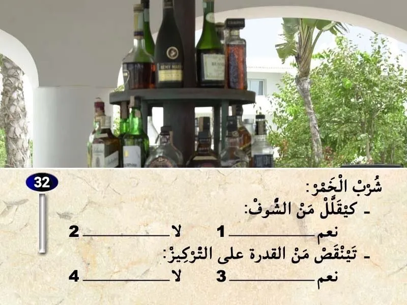
بيّن الجواب
الجواب الصحيح: 1 و 3
شرب الخمر هو من بين أحد الأسباب التي تؤدي إلى ضعف في العصب البصري وهو يعني حدوث تدني تدريجي في حدة الإبصار في كلتا العينين مع حدوث ضعف في الإبصار الملون أو تمييز الألوان. كما أن شرب الخمر مسؤول عن تباطؤ عمل الدماغ، وكذلك إفراز عدد من المنشطات التي تؤدي إلى الإحساس بالهلوسة وفقدان الوعي، وبالتالي فقدان التركيز والإحساس بما حولنا، بما في ذلك الأصوات والأضواء وغير ذلك. إذن في هذه الحالة شرب الخمر يقلل من النظر وكذلك يؤدي شربه إلى عدم التّركيز.
السؤال 33
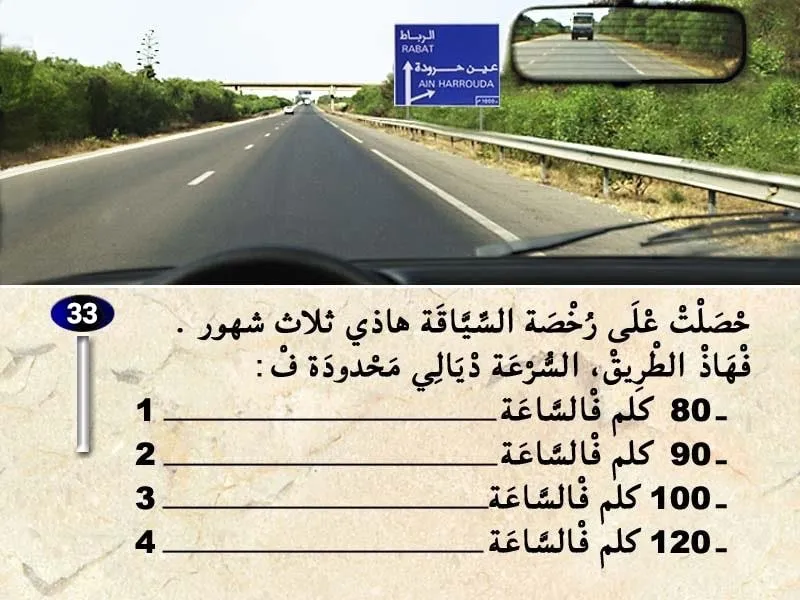
بيّن الجواب
الجواب الصحيح: 2
نتواجد في طريق سيار وهذا واضح من خلال العلامة الطّرقية الزرقاء الخاصة بالطّريق السّيار، والسرعة القصوى في الطريق السيّار هي 120 كلم في الساعة. لكن في هذه الحالة بما أنني حصلت على رخصة السياقة منذ 3 شهور فهذا يعني على أنني ما زلت في الفترة الاختبارية، وفي الفترة الاختبارية فإن سرعتي محدودة في سرعة 90 كلم في الساعة.
السؤال 34
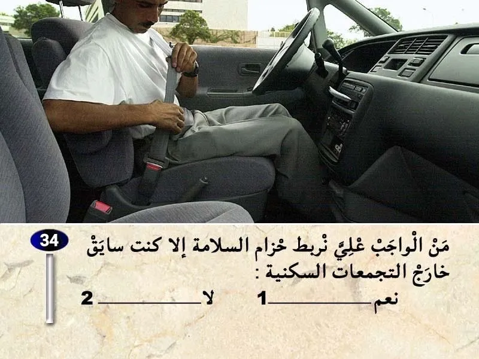
بيّن الجواب
الجواب الصحيح: 1
إستعمال حزام السّلامة فهو واجب بالنسبة لسائق السيارة داخل وخارج التجمعات السّكنية.
السؤال 35
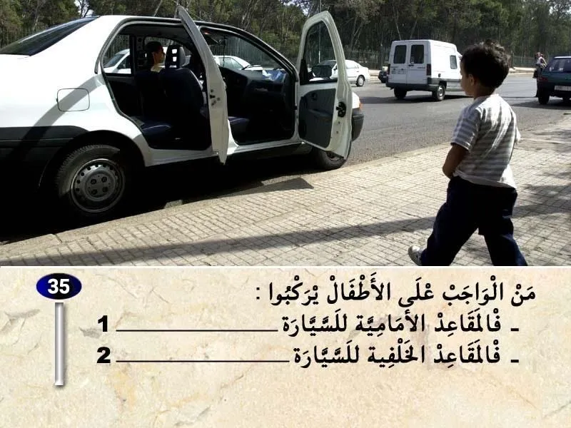
بيّن الجواب
الجواب الصحيح: 2
الأطفال الذين تقل أعمارهم عن 10 سنوات، يجب وضعهم في المقاعد الخلفية و تثبيتهم بحزام الأمن وفي حالة عدم وجود حزام الأمن يجب مراقبتهم بعدم فتح الأبواب و النوافذ.
السؤال 36
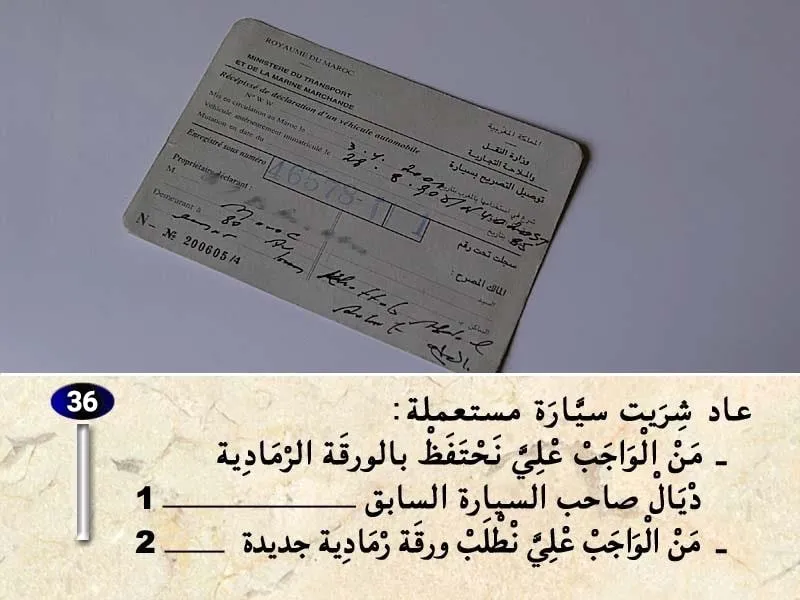
بيّن الجواب
الجواب الصحيح: 2
عندما أشتري سيارة مستعملة فمن الواجب عليّ تقديم طلب لتغيير الورقة الرّمادية التي تحمل اسم صاحب السيارة ومعلوماته إلى ورقة رمادية جديدة تحمل إسمي ومعلوماتي.
السؤال 37
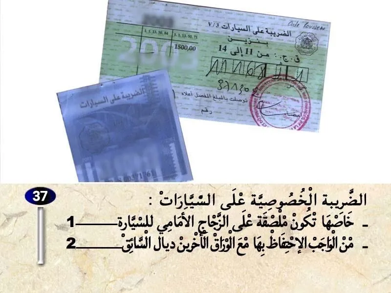
بيّن الجواب
الجواب الصحيح: 2
في مدوّنة السّير الجديدة فلم يعد إجباري إلصاق ملصق الضّريبة على السيّارة على الزجاج الأمامي للسيّارة. (لأنه في الماضي كانت تؤدى الضّريبة على السيّارة فقط في دار الضّريبة وكان إلزامي إلصاق الضّريبة على الزجاج الأمامي للسيّارة، لكن الان يمكن تأديتها في البنوك أو مكاتب تسهيلات وسوف يحصل السائق فقط على وصل بأنه قام بالدفع ويجب على الساّئق الاحتفاظ به مع باقي أوراق السيّارة). إذن الجواب الصحيح هو رقم 2.
السؤال 38
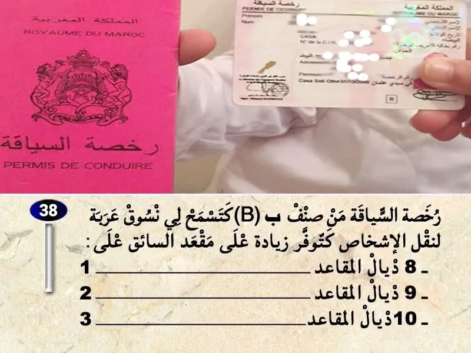
بيّن الجواب
الجواب الصحيح: 1
رخصة السّياقة من صنف ب (B) تسمح للسائق بسياقة عربة لنقل الأشخاص بعدد مقاعد هو 8 مقاعد، إضافة للسائق.
السؤال 39
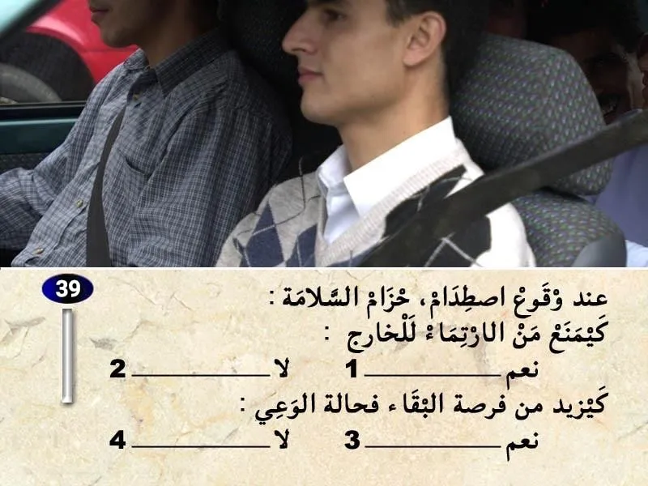
بيّن الجواب
الجواب الصحيح: 1 و 3
حزام السلامة هو جهاز سلامة للمركبة مصمم لحماية الرّاكب من الأذى عند التصادم أو التوقف المفاجئ. تهدف أحزمة الأمان إلى تقليل الإصابات بإيقاف مرتديه من الاصطدام في الأجزاء القاسية من المركبة ويمنع الراكب من أن يُقذف خارج المركبة ويساعد في البقاء في حالة وعي. إذن في هذه الحالة عند وقوع اصطدام حزام السّلامة يمنع من الارتماء خارج العربة وكذلك حزام السّلامة يزيد من فرصة البقاء في حالة وعي.
السؤال 40
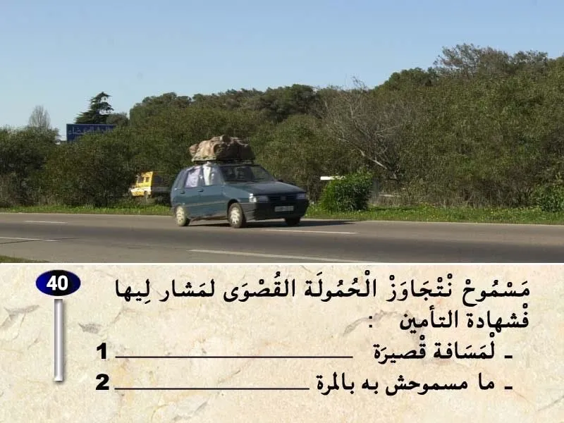
بيّن الجواب
الجواب الصحيح: 2
غير مسموح بتاتا بتجاوز الحمولة القانونية المشار إليها في شهادة التأمين حتى وإن كانت المسافة قصيرة.